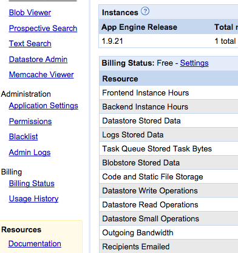
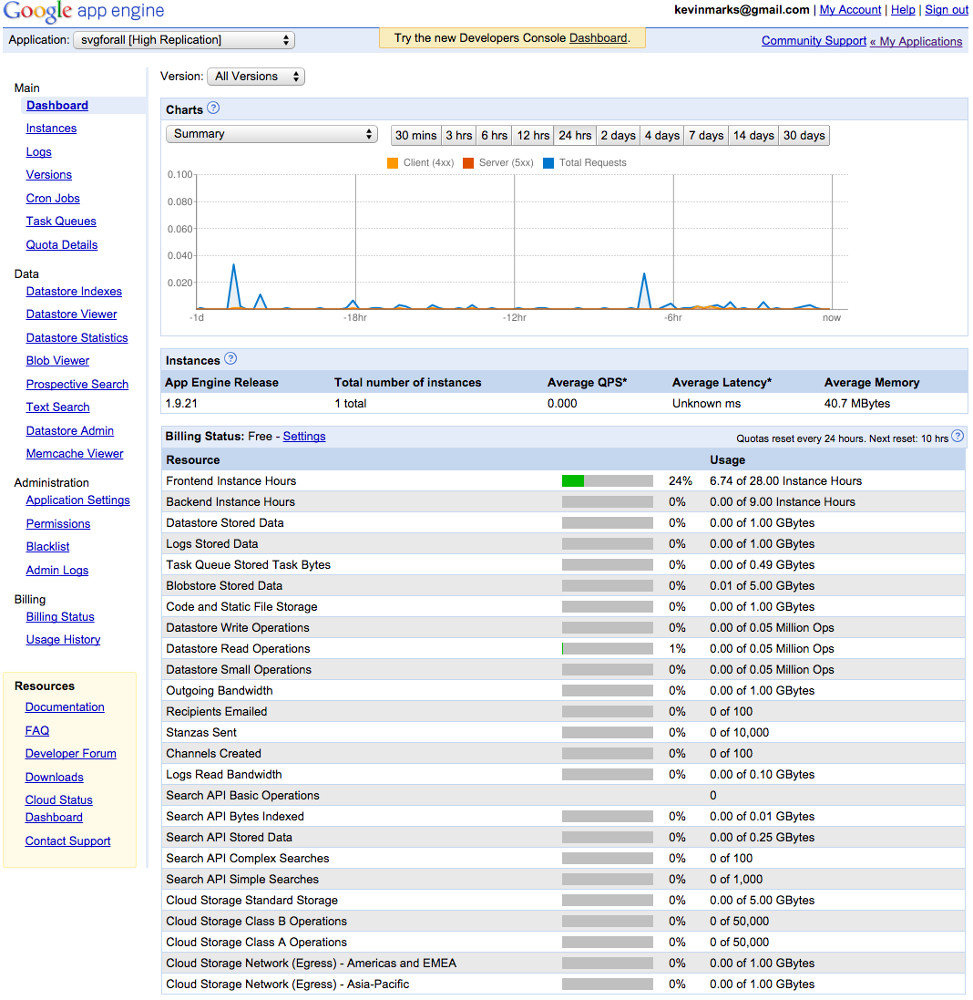
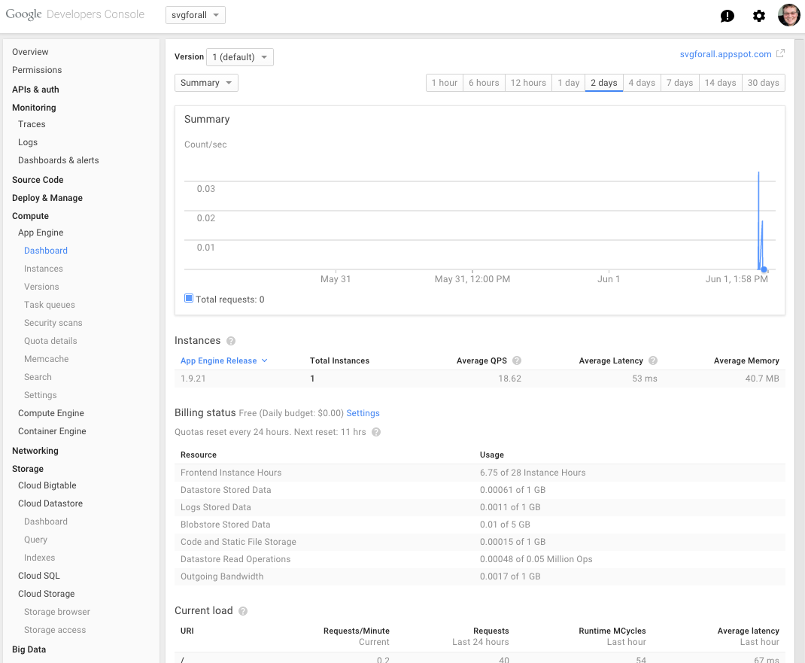

A few pages to demonstrate text layout choices
- examples of contrast ratios and greys
- Samples used for Dyslexia readability testing
- Examples of weight, size and colour typography choices
Screen grab examples
Do we want mobile-optimised like this?


Or desktop optimised like this?  